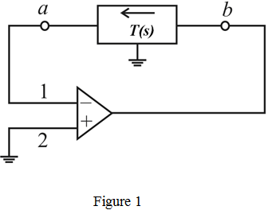
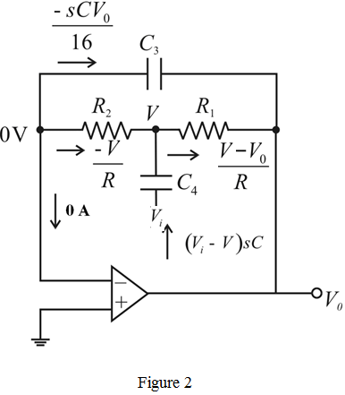

Step 1:
Refer to Figure 16.28 (b) in the textbook for the RC bridged T network having complex transmission zeros.
The network is placed in the negative feedback path of an ideal infinite-gain operational amplifier and  is disconnected from ground and connected to the input signal source
is disconnected from ground and connected to the input signal source
The modified circuit is shown in Figure 1.

Step 2:
Write the transfer function of the bridged-T network.
The element values are
The active filter feed-back loop generated is shown in Figure 2.

Step 3:
From the circuit in Figure 2, the voltage equation is,
…… (1)
The current I equation at V is,
…… (2)
Substitute equation (1) in equation (2).
Step 4:
Simplify further.
.
Multiply the equation with 16R.
Step 5:
Substitute.
Now the transfer function is,
Divide both numerator and denominator by .
Therefore, the transfer function of the bridged-T network is,  .
.
Step 6:
Recall the transfer function.
When, the gain is,
When , the gain is,
, the gain is,
Thus, the circuit is a band-pass filter.
Step 7:
Compare the term with standard second order expression, 
From the transfer function, the resonant frequency  is,
is,
Therefore the value of  is, .
is, .
Step 8:
The pole polynomial of the active filter of the circuit is,
Write the expression for the quality factor.
Substitute.
Thus, the quality factor of the band pass filter is, .
Step 9:
Substitute the corresponding expressions in the transfer function.
The center frequency gain is,
Thus, the center frequency gain of the bridged-T network is, .